Cigar Review: Montecristo White Series - Robusto Tubo
This one was a gift from my friend who came down vacation in U.S. Since they don't have restrictions on packaging, the tube and the cigar just looks stunning!
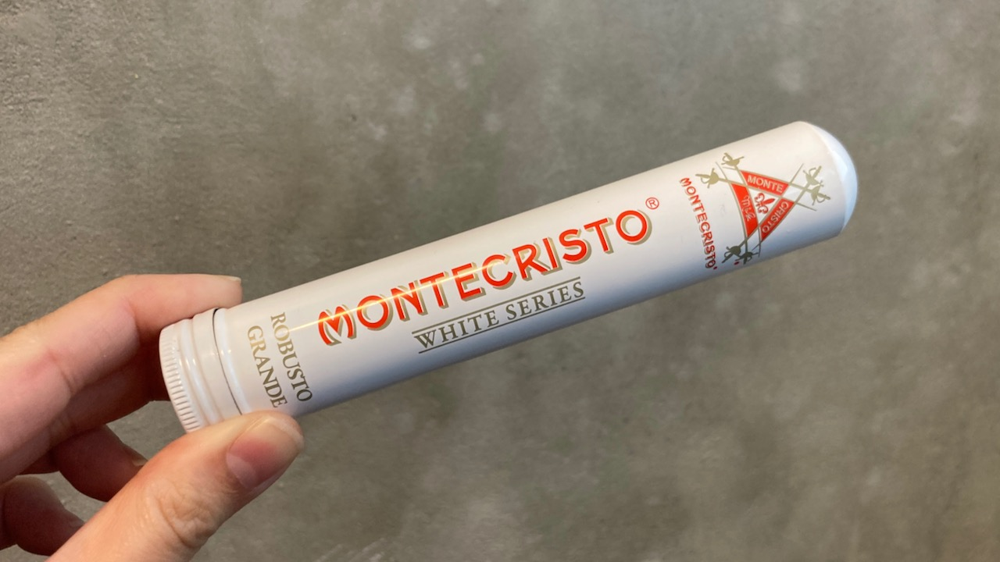 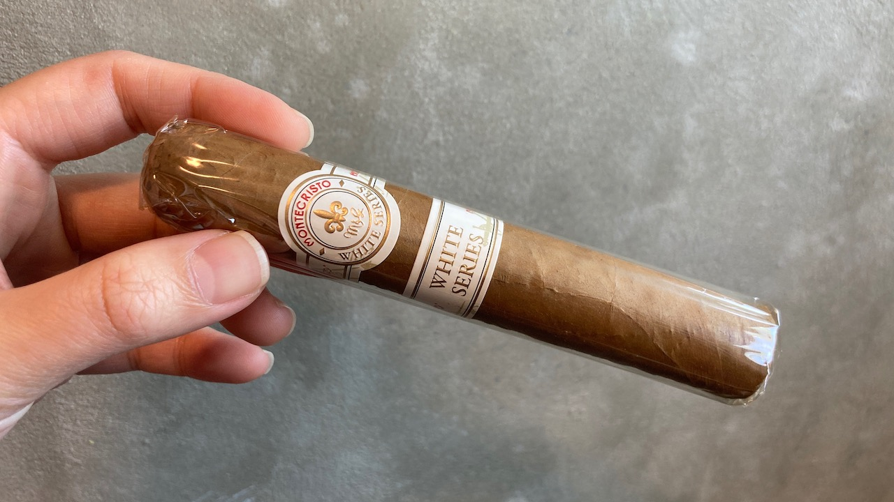
The cigar here is robusto size. It's a nicely packed cigar. It's just very beautiful with the double white band.
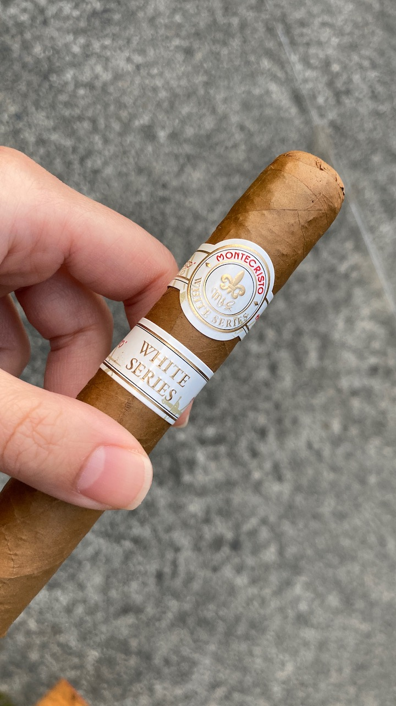 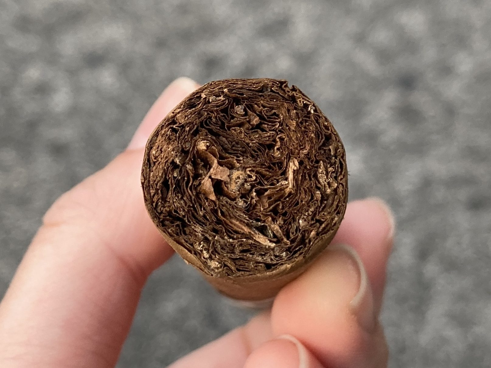
This is another cut that I am really proud of. I literally just removed the cap and nothing else. I think I'm getting better at this! 😝
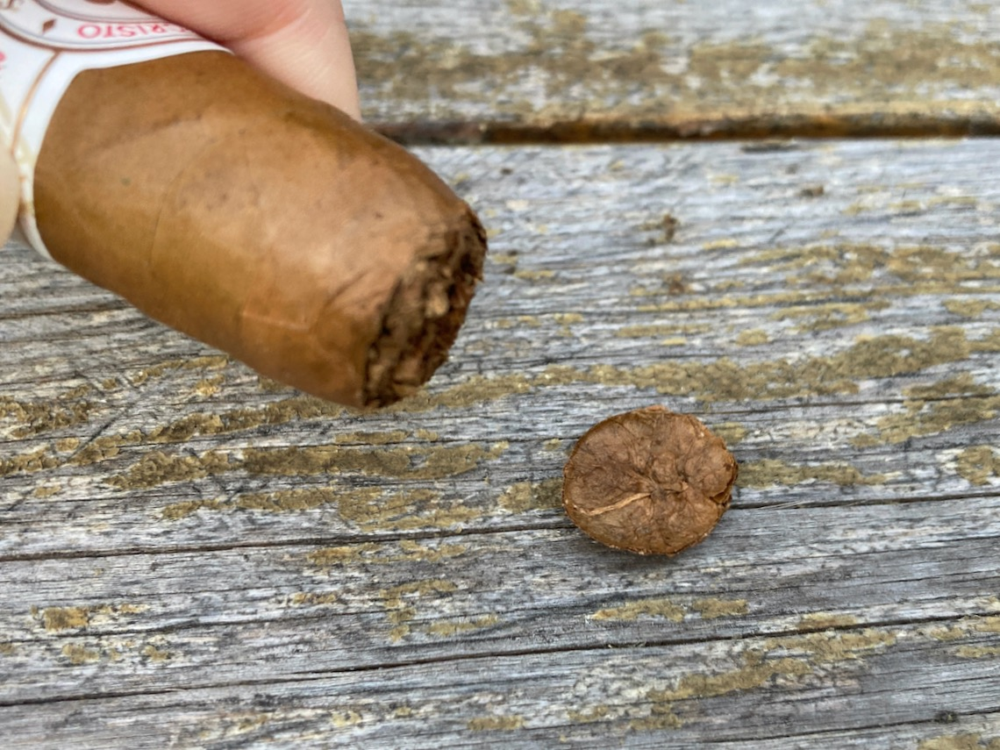
First few draws on this cigar was just very flavourful. 😋 This is the first cigar that I tasted this full strong nutty-ness. It also has a strong spice, but creamy sweet and smooth flavour at the same time. Strange on how this combination worked out together, but it was pretty cool. 😎
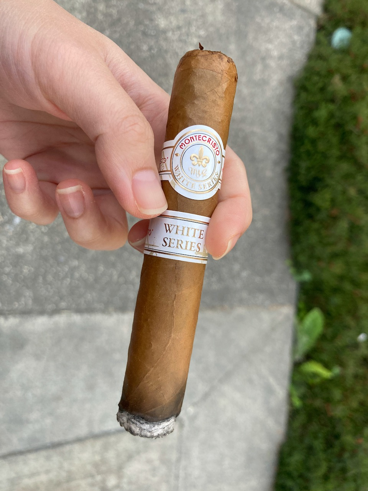 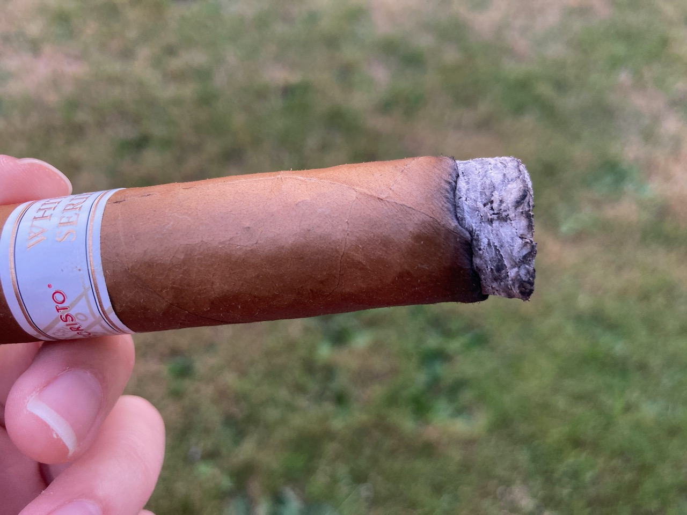 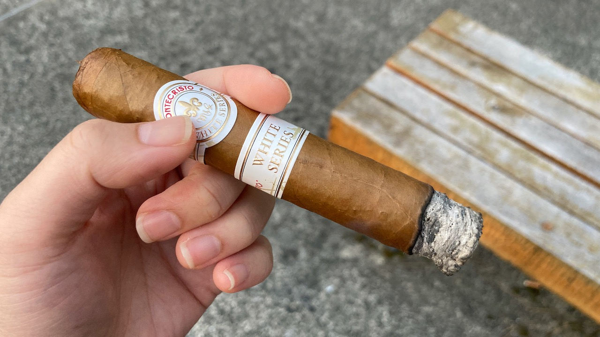
The burn started out a bit crooked, but it corrected itself beautifully. However, midway through, the burn grew crooked again. It could be caused by the wind. I was probably holding it in a way that one side of the cigar has more exposure to the wind and hence was burning faster than the other side. I was able to fix it up easily that the taste just self-balanced fine after.
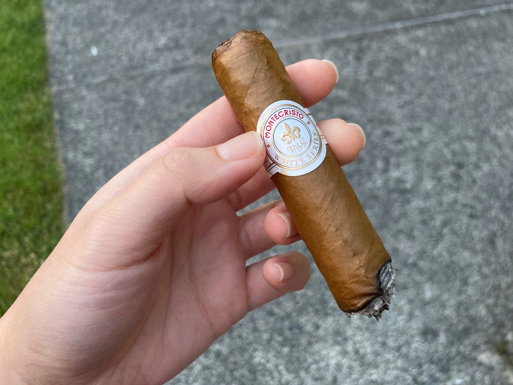 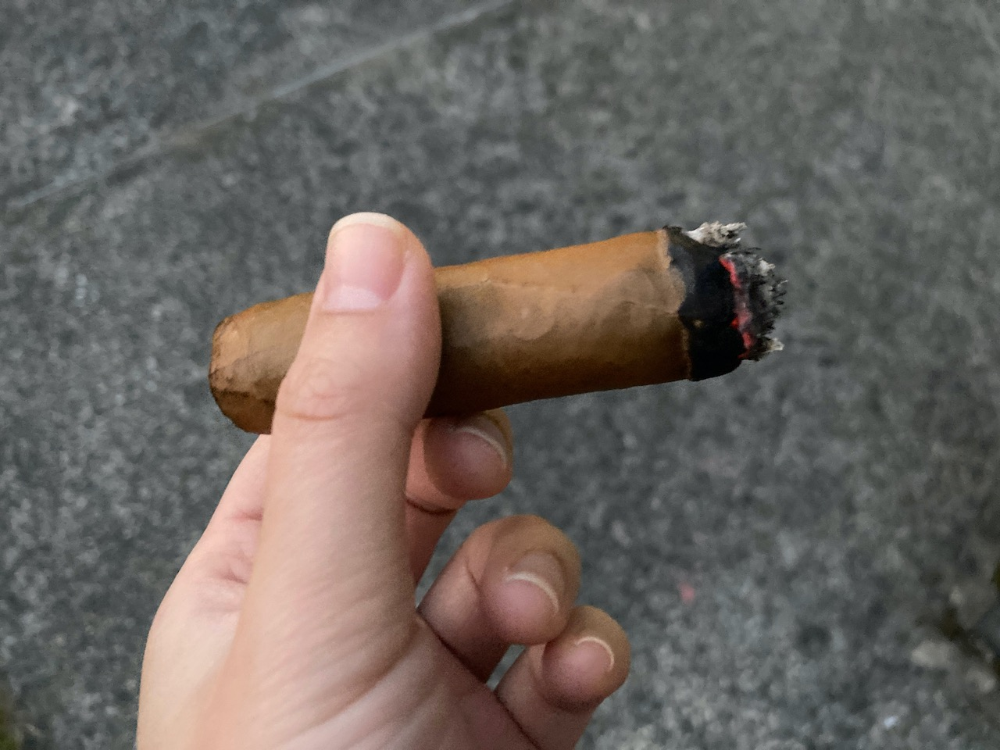 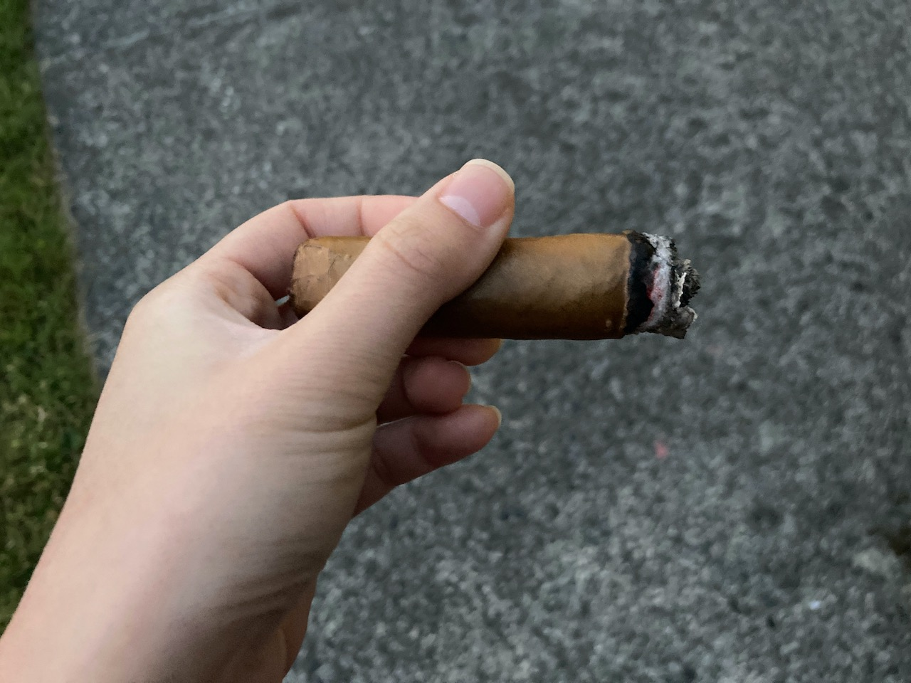
The flavours just faded out after midway. It was still creamy and smooth, just more faded. The hint of spice was still there, but the nutty flavour was gone. I ended again slightly early because of the missing flavours and it was getting dark. It took me about a little over an hour to reach where I was. The wrapper was slightly cracked because I was trying to tap off the ash. 😅 I figured that it's probably good to call it an end there.
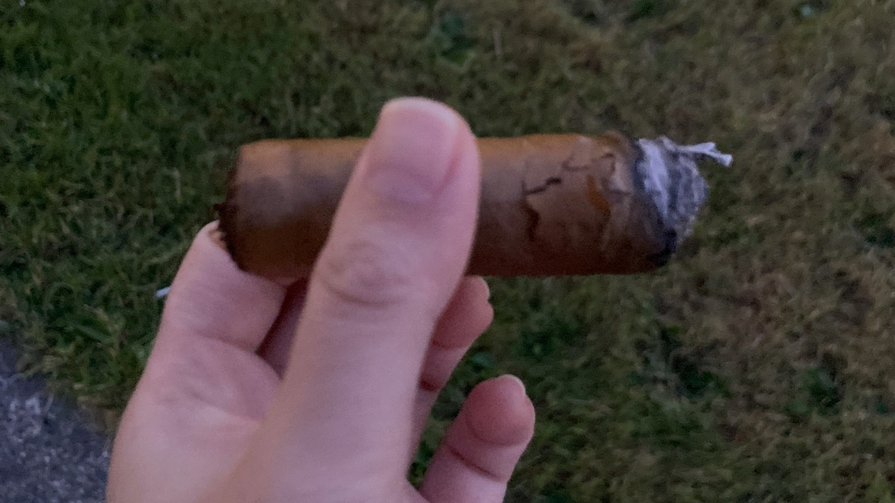 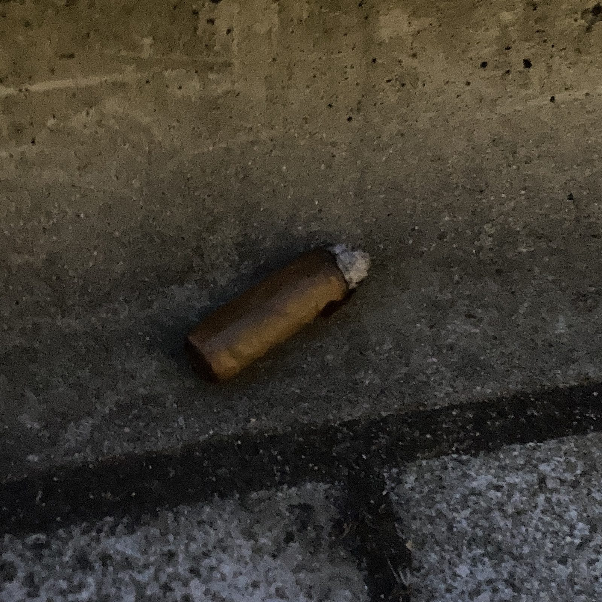
Overall, I think it's a pretty enjoyable cigar. I like the sweet nutty flavour, less about the spice though. I think
this is good for a try, but I personally wouldn't get actively pick up another one for two reasons:
1. I like the sweeter cigars that have no or less spice.
2. I live in Canada and I think this cigar is only available in the U.S.
It's a premium cigar and it's not a bad cigar by any means. It's just that the flavour profile is not my favourite. Otherwise, it is a lovely cigar to hold in hands.
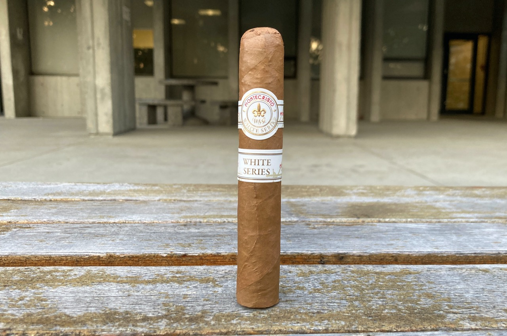
Bonus story
I enjoyed this cigar at my university. I wasn't aware, but it was convocation season. I don't know what degree the
convocation was for, but good job everyone! 🎓🙌 There were about 3-5 groups of people that came by to the smoking
area for cigarettes. As much as I enjoy the cigar, it took forever to finish lol.
I still get nervous whenever people comes close. But, when I have a cigar in hands, I feel like it boost my power. There was one person who came up and asked me for a cigarette. I was able to tell him that I have none in a solid firm stance. He meant no harm and just walked away. It is a minor interaction, but it is still nerve-wrecking for me to interact with strangers. All is good though.
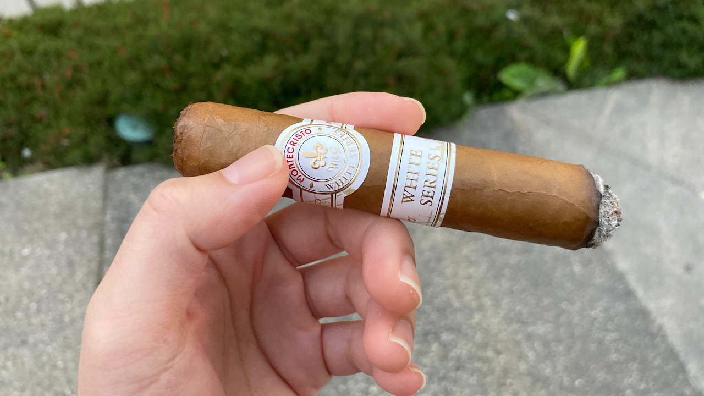
Hope you enjoy reading this post. If you had fun, please consider supporting this website and allow me to continue sharing my cigar journey with you. Thank you and I hope you will have a lovely day! ❤